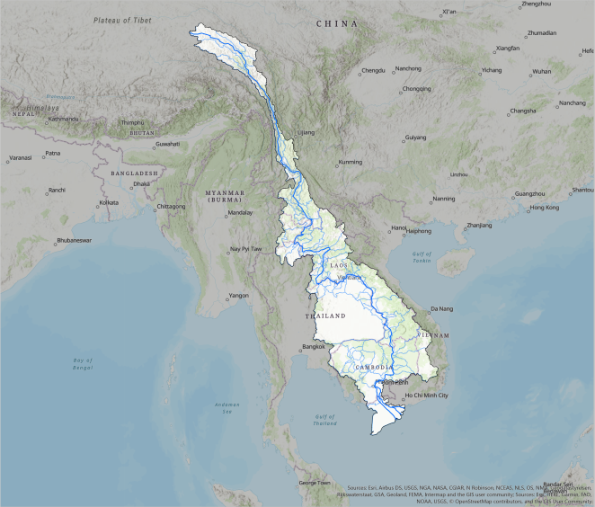

THE MEKONG RIVER

The Mekong delta is a large delta created by the Mekong river. The Mekong river is one of the longest rivers in the world, let alone Asia. It is estimated to be over 4350 kilometers long, spanning from the Tibetan Plateau in southern China, all the way to the southern part of Vietnam, where the delta area is located. Along the way it runs through the countries of China, Myanmar, Laos, Thailand, Cambodia and Vietnam.
The delta that we are focusing on is located in Vietnam, but the river has multiple delta area's along it's way. The river has such a large span of side-rivers, that it drains an area of over 495.000 square kilometers.
The fact that the river is over 4000 kilometers long and has a lot of smaller rivers splitting out of the main river, makes it very important for the countries it flows through. Not just because the Mekong is a huge source of freshwater, due to it's large drainage area. But also because the river is a 'highway' for trade in the area.
This makes it sound like the river is easy to navigate, otherwise it wouldn't be this important for trade in the area. But the opposite is true. The river has been very tough to navigate throughout history, which is one of the reasons why there are a lot of different countries in the area, despite most of them having a very similar culture.
BIODIVERSITY
The Mekong and it's tributaries account to one the richest areas of biodiversity in the world. It is so diverse that it's only beaten by the Amazon river in South-America. The Mekong river boasts an impressive 20.000 plant species, 430 mammals, 1200 birds, 800 reptiles and amphibians and over 850 different species of freshwater fish. These are the currently known statistics, but they are known to keep changing. New species are regularly discovered in the Mekong river, not just species that weren't known to live in and around the river, but new and unknown species all together. It is even said that an average of two new species are discovered in the region, per week!
Now that we've mentioned it's overall biodiversity, it's time we get into the aquatic biodiversity. The Mekong has the highest concentrated biodiversity per hectare of any river! This is of huge importance to the local economies of the area, now and throughout history. The people that inhabit the region are very dependent on the biodiversity of the area. A large part of food comes from aquatic animals, namely the black- and the white fish. Which have been favored by the local population for centuries. But these two fishes are long but the only sources of food coming from the rivers. Crabs, shrimps, snakes, turtles, frogs and other freshwater fishes are all of incredible importance.
But a very important distinction has to be made. These 'fisheries' can be divided into two main groups: the wild captures and the fish grown in controlled conditions. The latter is mostly 'grown' for the international market and/or the big cities. While the wild captures are hugely important in the sustainability of the local communities that live adjacent to the Mekong river. It is estimated that 40 million rural people, which is over two-thirds of the total rural population in the lower basin area of the Mekong, are involved in the forementioned wild capture fishery.
FIVE OF THE MOST BIODIVERSE RIVERS
This interactive map showcases five of the most biodiverse rivers on the planet.
The Cahaba-, Amazon-, Congo-, Ganges- and Mekong River!
(Click on the marker to see the name of the river)
HISTORY OF TRADE AND TRANSPORTATION
So it is safe to say that fishing is the absolute backbone of society in and around the Mekong delta. This is visible now, but the effect was even stronger throughout history, when there were no cars, planes, motor-propelled boats, or anything similar. This meant that every capture of fish, that wasn't being eaten directly, has to be transported via different means.
This leaves only two options: by land, or by water. If you have no prior knowledge of this area, you might think that that is not a problem at all. But the mekong delta is a huge swamp that floods regularly. You can imagine that getting from one point to the other, across vast floodplains is already a huge task, but you also have to imagine that there were no roads. So if you were to transport a heavy load of fish, that does not stay fresh for long in the summer heat of Southeast Asia, you would have to be very quick. Which is impossible for long- or even medium length distances.
This makes transportation and trade via land very tiresome, costly, and in conclusion, inefficient.
So only one other navigation method remains: water.
As previously mentioned, the river flows all the way from the Tibetan Plateau in China to the Mekong delta in Vietnam. This means the river has to traverse a lot of different types of terrain, floodplains, jungle, dry valleys, etc. This alone means the river has to adapt to all these surroundings, and so do you, if you were to traverse it by boat. You will have to be prepared for extreme seasonal variations in flow and climate. But the biggest issue with the river is not the climate changes and the biomes that the river flows through, no, it's the fact that there is a huge difference in height along the river. This causes the river to contain numerous rapids and waterfalls, which make navigation by boat very difficult, atleast for longer distances.
Even though navigation by boat on the Mekong river has always been a high risk, the river still remains a major trade route between western China and Southeast Asia.
HEIGHT AT WHICH THE MEKONG RIVER ENTERS THE COUNTRY (IN METERS)
GREATER MEKONG AREA THROUGHOUT HISTORY
Three images showcasing the borders of South-East Asia around the Mekong river, over time.
From left to right:
1832, 1948, 1967


Footer Banner Section
TROPENMUSEUM